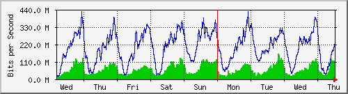
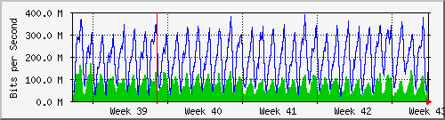
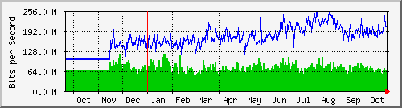

Traffic Analysis for Gi1/0/1 -- spider.sky
| System: | spider.sky in stoyka |
| Maintainer: | falcon@skyinet.org |
| Description: | GigabitEthernet1/0/1 billing-new-pppoe-clients |
| ifType: | ethernetCsmacd (6) |
| ifName: | Gi1/0/1 |
| Max Speed: | 1000.0 Mbits/s |
| Ip: | No Ip (No DNS name) |
The statistics were last updated Thursday, 26 October 2017 at 12:55,
at which time 'spider.sky' had been up for 8 days, 10:32:41.
`Daily' Graph (5 Minute Average)

|
Max |
Average |
Current |
| In |
167.4 Mb/s (16.7%) |
62.3 Mb/s (6.2%) |
113.2 Mb/s (11.3%) |
| Out |
418.3 Mb/s (41.8%) |
178.9 Mb/s (17.9%) |
190.4 Mb/s (19.0%) |
`Weekly' Graph (30 Minute Average)

|
Max |
Average |
Current |
| In |
158.5 Mb/s (15.9%) |
60.5 Mb/s (6.0%) |
109.5 Mb/s (11.0%) |
| Out |
426.6 Mb/s (42.7%) |
200.4 Mb/s (20.0%) |
217.0 Mb/s (21.7%) |
`Monthly' Graph (2 Hour Average)

|
Max |
Average |
Current |
| In |
169.8 Mb/s (17.0%) |
68.2 Mb/s (6.8%) |
112.2 Mb/s (11.2%) |
| Out |
385.2 Mb/s (38.5%) |
190.8 Mb/s (19.1%) |
166.9 Mb/s (16.7%) |
`Yearly' Graph (1 Day Average)

|
Max |
Average |
Current |
| In |
119.7 Mb/s (12.0%) |
71.7 Mb/s (7.2%) |
60.5 Mb/s (6.1%) |
| Out |
252.5 Mb/s (25.3%) |
166.6 Mb/s (16.7%) |
205.3 Mb/s (20.5%) |
| GREEN ### |
Incoming Traffic in Bits per Second |
| BLUE ### |
Outgoing Traffic in Bits per Second |